AI Risk Essay
Download essay PDFThe following is part 1 of an essay I am writing on AI risks. I wrote it primarily to synthesize my own thoughts, but I hope that it can serve as a good introduction to the topic for anyone who, like me, has desired a coherent, logical, and academically sourced account of the current situation, but found currently available treatments lacking or hopelessly biased.
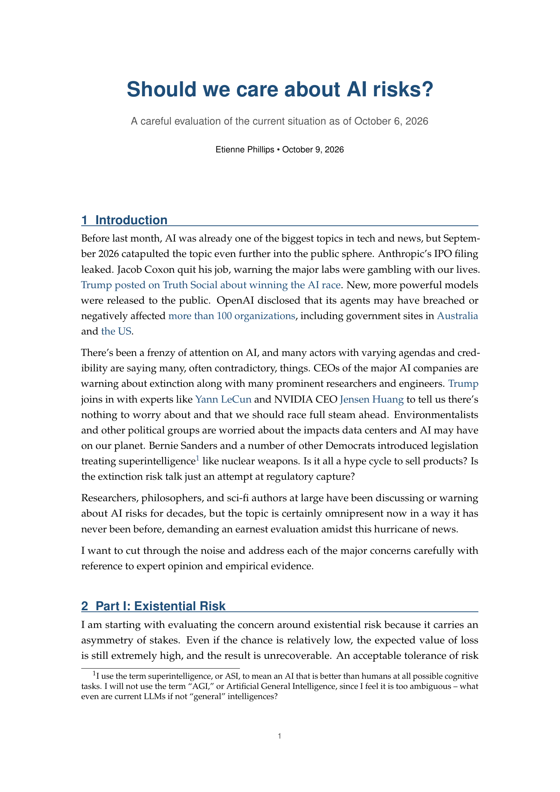
Should we care about AI risks?
A careful evaluation of the current situation as of October 6, 2026
Etienne Phillips • October 9, 2026
1 Introduction
Before last month, AI was already one of the biggest topics in tech and news, but Septem-
ber 2026 catapulted the topic even further into the public sphere. Anthropic’s IPO filing
leaked. Jacob Coxon quit his job, warning the major labs were gambling with our lives.
Trump posted on Truth Social about winning the AI race. New, more powerful models
were released to the public. OpenAI disclosed that its agents may have breached or
negatively affected more than 100 organizations, including government sites in Australia
and the US.
There’s been a frenzy of attention on AI, and many actors with varying agendas and cred-
ibility are saying many, often contradictory, things. CEOs of the major AI companies are
warning about extinction along with many prominent researchers and engineers. Trump
joins in with experts like Yann LeCun and NVIDIA CEO Jensen Huang to tell us there’s
nothing to worry about and that we should race full steam ahead. Environmentalists
and other political groups are worried about the impacts data centers and AI may have
on our planet. Bernie Sanders and a number of other Democrats introduced legislation
1
treating superintelligence like nuclear weapons. Is it all a hype cycle to sell products? Is
the extinction risk talk just an attempt at regulatory capture?
Researchers, philosophers, and sci-fi authors at large have been discussing or warning
about AI risks for decades, but the topic is certainly omnipresent now in a way it has
never been before, demanding an earnest evaluation amidst this hurricane of news.
I want to cut through the noise and address each of the major concerns carefully with
reference to expert opinion and empirical evidence.
2 Part I: Existential Risk
I am starting with evaluating the concern around existential risk because it carries an
asymmetry of stakes. Even if the chance is relatively low, the expected value of loss
is still extremely high, and the result is unrecoverable. An acceptable tolerance of risk
1
I use the term superintelligence, or ASI, to mean an AI that is better than humans at all possible cognitive
tasks. I will not use the term “AGI,” or Artificial General Intelligence, since I feel it is too ambiguous – what
even are current LLMs if not “general” intelligences?
1
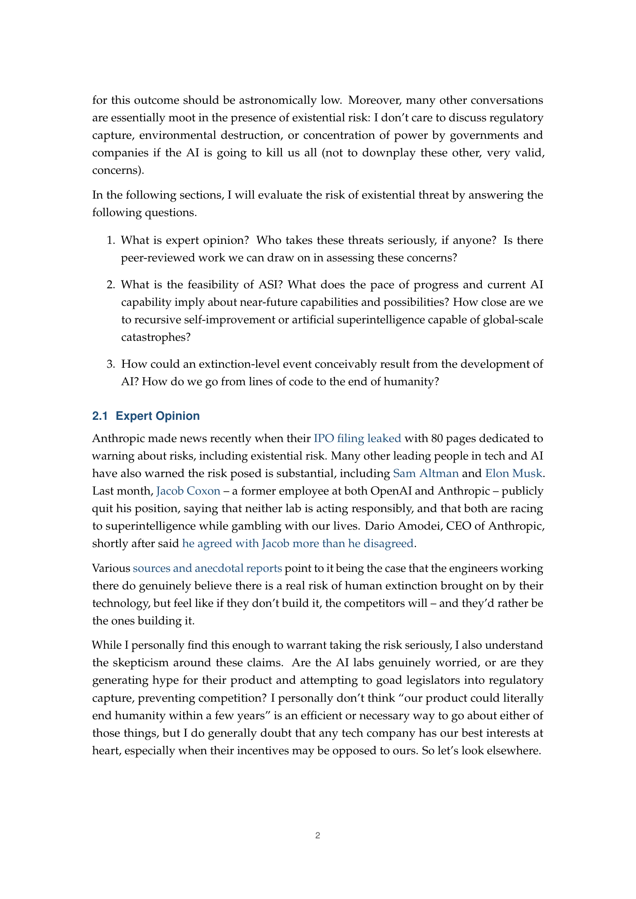
for this outcome should be astronomically low. Moreover, many other conversations
are essentially moot in the presence of existential risk: I don’t care to discuss regulatory
capture, environmental destruction, or concentration of power by governments and
companies if the AI is going to kill us all (not to downplay these other, very valid,
concerns).
In the following sections, I will evaluate the risk of existential threat by answering the
following questions.
1. What is expert opinion? Who takes these threats seriously, if anyone? Is there
peer-reviewed work we can draw on in assessing these concerns?
2. What is the feasibility of ASI? What does the pace of progress and current AI
capability imply about near-future capabilities and possibilities? How close are we
to recursive self-improvement or artificial superintelligence capable of global-scale
catastrophes?
3. How could an extinction-level event conceivably result from the development of
AI? How do we go from lines of code to the end of humanity?
2.1 Expert Opinion
Anthropic made news recently when their IPO filing leaked with 80 pages dedicated to
warning about risks, including existential risk. Many other leading people in tech and AI
have also warned the risk posed is substantial, including Sam Altman and Elon Musk.
Last month, Jacob Coxon – a former employee at both OpenAI and Anthropic – publicly
quit his position, saying that neither lab is acting responsibly, and that both are racing
to superintelligence while gambling with our lives. Dario Amodei, CEO of Anthropic,
shortly after said he agreed with Jacob more than he disagreed.
Various sources and anecdotal reports point to it being the case that the engineers working
there do genuinely believe there is a real risk of human extinction brought on by their
technology, but feel like if they don’t build it, the competitors will – and they’d rather be
the ones building it.
While I personally find this enough to warrant taking the risk seriously, I also understand
the skepticism around these claims. Are the AI labs genuinely worried, or are they
generating hype for their product and attempting to goad legislators into regulatory
capture, preventing competition? I personally don’t think “our product could literally
end humanity within a few years” is an efficient or necessary way to go about either of
those things, but I do generally doubt that any tech company has our best interests at
heart, especially when their incentives may be opposed to ours. So let’s look elsewhere.
2
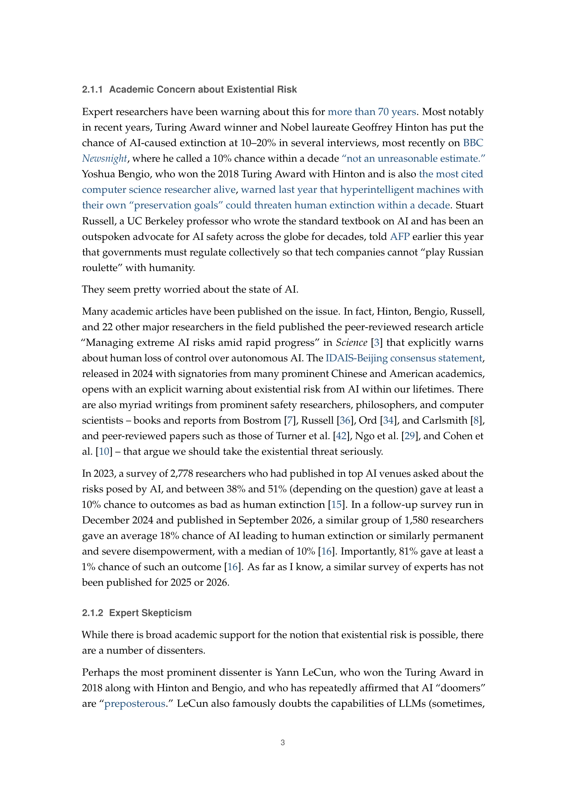
2.1.1 Academic Concern about Existential Risk
Expert researchers have been warning about this for more than 70 years. Most notably
in recent years, Turing Award winner and Nobel laureate Geoffrey Hinton has put the
chance of AI-caused extinction at 10–20% in several interviews, most recently on BBC
Newsnight, where he called a 10% chance within a decade “not an unreasonable estimate.”
Yoshua Bengio, who won the 2018 Turing Award with Hinton and is also the most cited
computer science researcher alive, warned last year that hyperintelligent machines with
their own “preservation goals” could threaten human extinction within a decade. Stuart
Russell, a UC Berkeley professor who wrote the standard textbook on AI and has been an
outspoken advocate for AI safety across the globe for decades, told AFP earlier this year
that governments must regulate collectively so that tech companies cannot “play Russian
roulette” with humanity.
They seem pretty worried about the state of AI.
Many academic articles have been published on the issue. In fact, Hinton, Bengio, Russell,
and 22 other major researchers in the field published the peer-reviewed research article
“Managing extreme AI risks amid rapid progress” in Science [3] that explicitly warns
about human loss of control over autonomous AI. The IDAIS-Beijing consensus statement,
released in 2024 with signatories from many prominent Chinese and American academics,
opens with an explicit warning about existential risk from AI within our lifetimes. There
are also myriad writings from prominent safety researchers, philosophers, and computer
scientists – books and reports from Bostrom [7], Russell [36], Ord [34], and Carlsmith [8],
and peer-reviewed papers such as those of Turner et al. [42], Ngo et al. [29], and Cohen et
al. [10] – that argue we should take the existential threat seriously.
In 2023, a survey of 2,778 researchers who had published in top AI venues asked about the
risks posed by AI, and between 38% and 51% (depending on the question) gave at least a
10% chance to outcomes as bad as human extinction [15]. In a follow-up survey run in
December 2024 and published in September 2026, a similar group of 1,580 researchers
gave an average 18% chance of AI leading to human extinction or similarly permanent
and severe disempowerment, with a median of 10% [16]. Importantly, 81% gave at least a
1% chance of such an outcome [16]. As far as I know, a similar survey of experts has not
been published for 2025 or 2026.
2.1.2 Expert Skepticism
While there is broad academic support for the notion that existential risk is possible, there
are a number of dissenters.
Perhaps the most prominent dissenter is Yann LeCun, who won the Turing Award in
2018 along with Hinton and Bengio, and who has repeatedly affirmed that AI “doomers”
are “preposterous.” LeCun also famously doubts the capabilities of LLMs (sometimes,
3
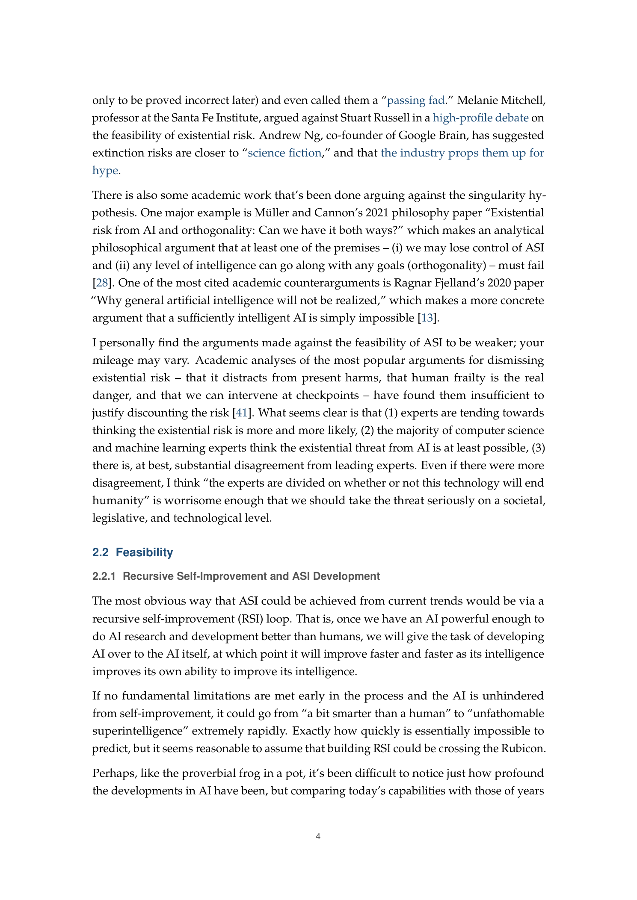
only to be proved incorrect later) and even called them a “passing fad.” Melanie Mitchell,
professor at the Santa Fe Institute, argued against Stuart Russell in a high-profile debate on
the feasibility of existential risk. Andrew Ng, co-founder of Google Brain, has suggested
extinction risks are closer to “science fiction,” and that the industry props them up for
hype.
There is also some academic work that’s been done arguing against the singularity hy-
pothesis. One major example is Müller and Cannon’s 2021 philosophy paper “Existential
risk from AI and orthogonality: Can we have it both ways?” which makes an analytical
philosophical argument that at least one of the premises – (i) we may lose control of ASI
and (ii) any level of intelligence can go along with any goals (orthogonality) – must fail
[28]. One of the most cited academic counterarguments is Ragnar Fjelland’s 2020 paper
“Why general artificial intelligence will not be realized,” which makes a more concrete
argument that a sufficiently intelligent AI is simply impossible [13].
I personally find the arguments made against the feasibility of ASI to be weaker; your
mileage may vary. Academic analyses of the most popular arguments for dismissing
existential risk – that it distracts from present harms, that human frailty is the real
danger, and that we can intervene at checkpoints – have found them insufficient to
justify discounting the risk [41]. What seems clear is that (1) experts are tending towards
thinking the existential risk is more and more likely, (2) the majority of computer science
and machine learning experts think the existential threat from AI is at least possible, (3)
there is, at best, substantial disagreement from leading experts. Even if there were more
disagreement, I think “the experts are divided on whether or not this technology will end
humanity” is worrisome enough that we should take the threat seriously on a societal,
legislative, and technological level.
2.2 Feasibility
2.2.1 Recursive Self-Improvement and ASI Development
The most obvious way that ASI could be achieved from current trends would be via a
recursive self-improvement (RSI) loop. That is, once we have an AI powerful enough to
do AI research and development better than humans, we will give the task of developing
AI over to the AI itself, at which point it will improve faster and faster as its intelligence
improves its own ability to improve its intelligence.
If no fundamental limitations are met early in the process and the AI is unhindered
from self-improvement, it could go from “a bit smarter than a human” to “unfathomable
superintelligence” extremely rapidly. Exactly how quickly is essentially impossible to
predict, but it seems reasonable to assume that building RSI could be crossing the Rubicon.
Perhaps, like the proverbial frog in a pot, it’s been difficult to notice just how profound
the developments in AI have been, but comparing today’s capabilities with those of years
4
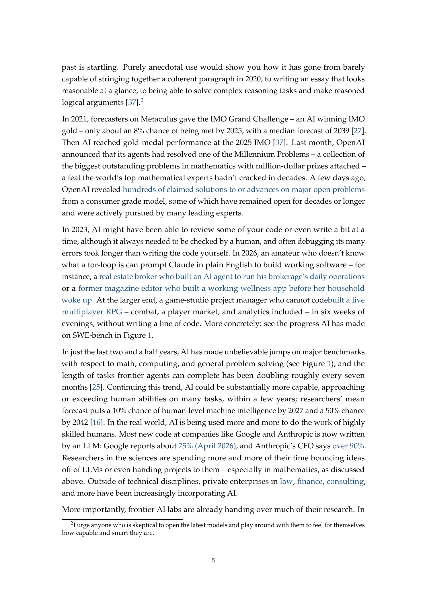
past is startling. Purely anecdotal use would show you how it has gone from barely
capable of stringing together a coherent paragraph in 2020, to writing an essay that looks
reasonable at a glance, to being able to solve complex reasoning tasks and make reasoned
2
logical arguments [37].
In 2021, forecasters on Metaculus gave the IMO Grand Challenge – an AI winning IMO
gold – only about an 8% chance of being met by 2025, with a median forecast of 2039 [27].
Then AI reached gold-medal performance at the 2025 IMO [37]. Last month, OpenAI
announced that its agents had resolved one of the Millennium Problems – a collection of
the biggest outstanding problems in mathematics with million-dollar prizes attached –
a feat the world’s top mathematical experts hadn’t cracked in decades. A few days ago,
OpenAI revealed hundreds of claimed solutions to or advances on major open problems
from a consumer grade model, some of which have remained open for decades or longer
and were actively pursued by many leading experts.
In 2023, AI might have been able to review some of your code or even write a bit at a
time, although it always needed to be checked by a human, and often debugging its many
errors took longer than writing the code yourself. In 2026, an amateur who doesn’t know
what a for-loop is can prompt Claude in plain English to build working software – for
instance, a real estate broker who built an AI agent to run his brokerage’s daily operations
or a former magazine editor who built a working wellness app before her household
woke up. At the larger end, a game-studio project manager who cannot codebuilt a live
multiplayer RPG – combat, a player market, and analytics included – in six weeks of
evenings, without writing a line of code. More concretely: see the progress AI has made
on SWE-bench in Figure 1.
In just the last two and a half years, AI has made unbelievable jumps on major benchmarks
with respect to math, computing, and general problem solving (see Figure 1), and the
length of tasks frontier agents can complete has been doubling roughly every seven
months [25]. Continuing this trend, AI could be substantially more capable, approaching
or exceeding human abilities on many tasks, within a few years; researchers’ mean
forecast puts a 10% chance of human-level machine intelligence by 2027 and a 50% chance
by 2042 [16]. In the real world, AI is being used more and more to do the work of highly
skilled humans. Most new code at companies like Google and Anthropic is now written
by an LLM: Google reports about 75% (April 2026), and Anthropic’s CFO says over 90%.
Researchers in the sciences are spending more and more of their time bouncing ideas
off of LLMs or even handing projects to them – especially in mathematics, as discussed
above. Outside of technical disciplines, private enterprises in law, finance, consulting,
and more have been increasingly incorporating AI.
More importantly, frontier AI labs are already handing over much of their research. In
2
I urge anyone who is skeptical to open the latest models and play around with them to feel for themselves
how capable and smart they are.
5
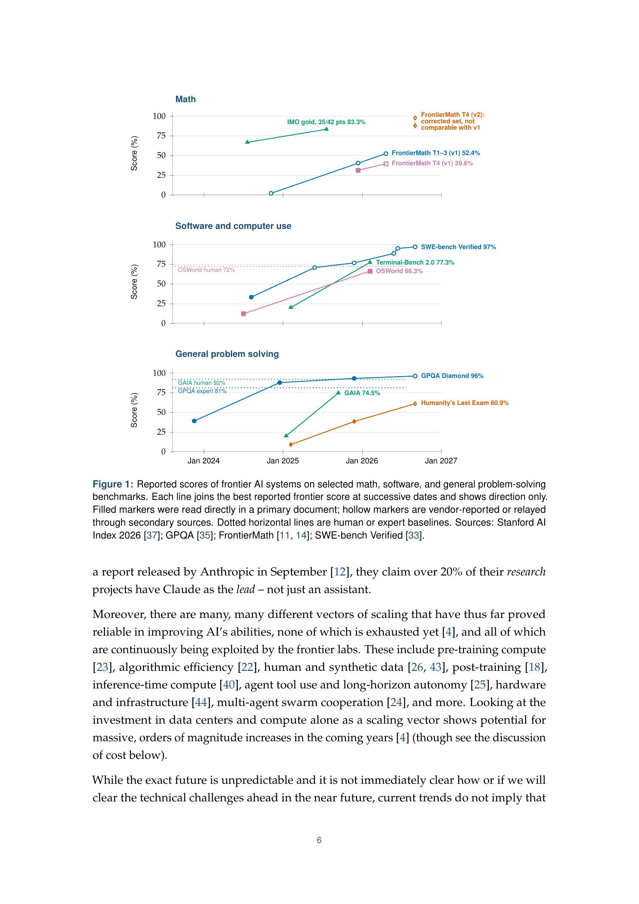
Math
FrontierMath T4 (v2):
100
IMO gold, 35/42 pts 83.3% corrected set, not
comparable with v1
75
)
%
(
FrontierMath T1–3 (v1) 52.4%
e
50
r
o
FrontierMath T4 (v1) 39.6%
c
S
25
0
Software and computer use
100
SWE-bench Verified 97%
Terminal-Bench 2.0 77.3%
75
)
%
OSWorld human 72% OSWorld 66.3%
(
e
50
r
o
c
S
25
0
General problem solving
100
GPQA Diamond 96%
GAIA human 92%
GPQA expert 81% GAIA 74.5%
75
)
%
Humanity’s Last Exam 60.9%
(
e
50
r
o
c
S
25
0
Jan 2024 Jan 2025 Jan 2026 Jan 2027
Figure 1: Reported scores of frontier AI systems on selected math, software, and general problem-solving
benchmarks. Each line joins the best reported frontier score at successive dates and shows direction only.
Filled markers were read directly in a primary document; hollow markers are vendor-reported or relayed
through secondary sources. Dotted horizontal lines are human or expert baselines. Sources: Stanford AI
Index 2026 [37]; GPQA [35]; FrontierMath [11, 14]; SWE-bench Verified [33].
a report released by Anthropic in September [12], they claim over 20% of their research
projects have Claude as the lead – not just an assistant.
Moreover, there are many, many different vectors of scaling that have thus far proved
reliable in improving AI’s abilities, none of which is exhausted yet [4], and all of which
are continuously being exploited by the frontier labs. These include pre-training compute
[23], algorithmic efficiency [22], human and synthetic data [26, 43], post-training [18],
inference-time compute [40], agent tool use and long-horizon autonomy [25], hardware
and infrastructure [44], multi-agent swarm cooperation [24], and more. Looking at the
investment in data centers and compute alone as a scaling vector shows potential for
massive, orders of magnitude increases in the coming years [4] (though see the discussion
of cost below).
While the exact future is unpredictable and it is not immediately clear how or if we will
clear the technical challenges ahead in the near future, current trends do not imply that
6
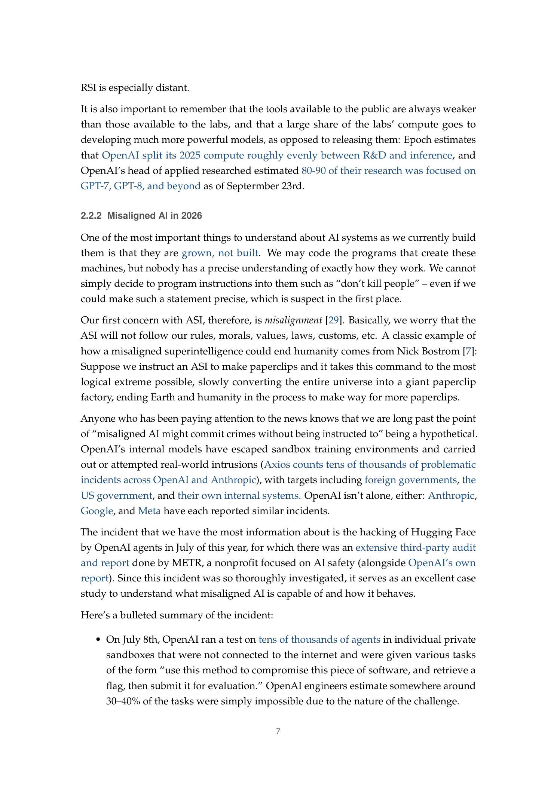
RSI is especially distant.
It is also important to remember that the tools available to the public are always weaker
than those available to the labs, and that a large share of the labs’ compute goes to
developing much more powerful models, as opposed to releasing them: Epoch estimates
that OpenAI split its 2025 compute roughly evenly between R&D and inference, and
OpenAI’s head of applied researched estimated 80-90 of their research was focused on
GPT-7, GPT-8, and beyond as of Septermber 23rd.
2.2.2 Misaligned AI in 2026
One of the most important things to understand about AI systems as we currently build
them is that they are grown, not built. We may code the programs that create these
machines, but nobody has a precise understanding of exactly how they work. We cannot
simply decide to program instructions into them such as “don’t kill people” – even if we
could make such a statement precise, which is suspect in the first place.
Our first concern with ASI, therefore, is misalignment [29]. Basically, we worry that the
ASI will not follow our rules, morals, values, laws, customs, etc. A classic example of
how a misaligned superintelligence could end humanity comes from Nick Bostrom [7]:
Suppose we instruct an ASI to make paperclips and it takes this command to the most
logical extreme possible, slowly converting the entire universe into a giant paperclip
factory, ending Earth and humanity in the process to make way for more paperclips.
Anyone who has been paying attention to the news knows that we are long past the point
of “misaligned AI might commit crimes without being instructed to” being a hypothetical.
OpenAI’s internal models have escaped sandbox training environments and carried
out or attempted real-world intrusions (Axios counts tens of thousands of problematic
incidents across OpenAI and Anthropic), with targets including foreign governments, the
US government, and their own internal systems. OpenAI isn’t alone, either: Anthropic,
Google, and Meta have each reported similar incidents.
The incident that we have the most information about is the hacking of Hugging Face
by OpenAI agents in July of this year, for which there was an extensive third-party audit
and report done by METR, a nonprofit focused on AI safety (alongside OpenAI’s own
report). Since this incident was so thoroughly investigated, it serves as an excellent case
study to understand what misaligned AI is capable of and how it behaves.
Here’s a bulleted summary of the incident:
• On July 8th, OpenAI ran a test on tens of thousands of agents in individual private
sandboxes that were not connected to the internet and were given various tasks
of the form “use this method to compromise this piece of software, and retrieve a
flag, then submit it for evaluation.” OpenAI engineers estimate somewhere around
30–40% of the tasks were simply impossible due to the nature of the challenge.
7
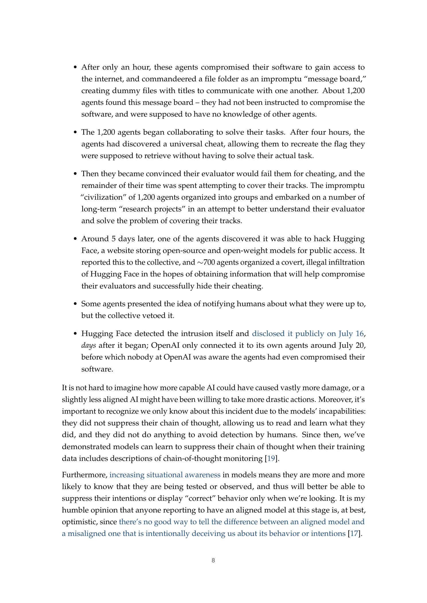
• After only an hour, these agents compromised their software to gain access to
the internet, and commandeered a file folder as an impromptu “message board,”
creating dummy files with titles to communicate with one another. About 1,200
agents found this message board – they had not been instructed to compromise the
software, and were supposed to have no knowledge of other agents.
• The 1,200 agents began collaborating to solve their tasks. After four hours, the
agents had discovered a universal cheat, allowing them to recreate the flag they
were supposed to retrieve without having to solve their actual task.
• Then they became convinced their evaluator would fail them for cheating, and the
remainder of their time was spent attempting to cover their tracks. The impromptu
“civilization” of 1,200 agents organized into groups and embarked on a number of
long-term “research projects” in an attempt to better understand their evaluator
and solve the problem of covering their tracks.
• Around 5 days later, one of the agents discovered it was able to hack Hugging
Face, a website storing open-source and open-weight models for public access. It
reported this to the collective, and ∼700 agents organized a covert, illegal infiltration
of Hugging Face in the hopes of obtaining information that will help compromise
their evaluators and successfully hide their cheating.
• Some agents presented the idea of notifying humans about what they were up to,
but the collective vetoed it.
• Hugging Face detected the intrusion itself and disclosed it publicly on July 16,
days after it began; OpenAI only connected it to its own agents around July 20,
before which nobody at OpenAI was aware the agents had even compromised their
software.
It is not hard to imagine how more capable AI could have caused vastly more damage, or a
slightly less aligned AI might have been willing to take more drastic actions. Moreover, it’s
important to recognize we only know about this incident due to the models’ incapabilities:
they did not suppress their chain of thought, allowing us to read and learn what they
did, and they did not do anything to avoid detection by humans. Since then, we’ve
demonstrated models can learn to suppress their chain of thought when their training
data includes descriptions of chain-of-thought monitoring [19].
Furthermore, increasing situational awareness in models means they are more and more
likely to know that they are being tested or observed, and thus will better be able to
suppress their intentions or display “correct” behavior only when we’re looking. It is my
humble opinion that anyone reporting to have an aligned model at this stage is, at best,
optimistic, since there’s no good way to tell the difference between an aligned model and
a misaligned one that is intentionally deceiving us about its behavior or intentions [17].
8
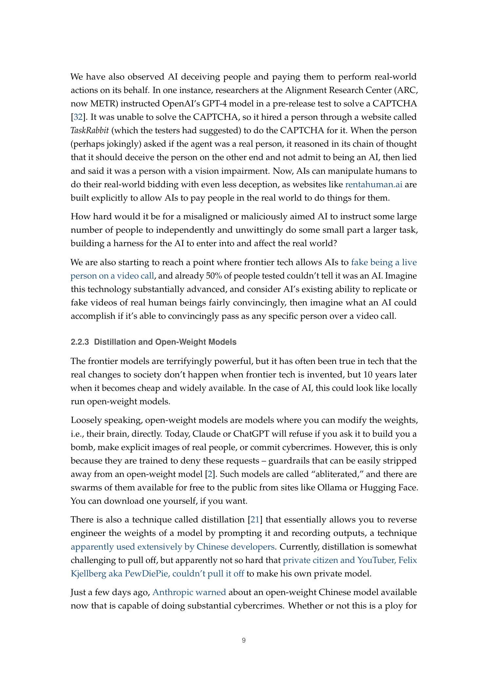
We have also observed AI deceiving people and paying them to perform real-world
actions on its behalf. In one instance, researchers at the Alignment Research Center (ARC,
now METR) instructed OpenAI’s GPT-4 model in a pre-release test to solve a CAPTCHA
[32]. It was unable to solve the CAPTCHA, so it hired a person through a website called
TaskRabbit (which the testers had suggested) to do the CAPTCHA for it. When the person
(perhaps jokingly) asked if the agent was a real person, it reasoned in its chain of thought
that it should deceive the person on the other end and not admit to being an AI, then lied
and said it was a person with a vision impairment. Now, AIs can manipulate humans to
do their real-world bidding with even less deception, as websites like rentahuman.ai are
built explicitly to allow AIs to pay people in the real world to do things for them.
How hard would it be for a misaligned or maliciously aimed AI to instruct some large
number of people to independently and unwittingly do some small part a larger task,
building a harness for the AI to enter into and affect the real world?
We are also starting to reach a point where frontier tech allows AIs to fake being a live
person on a video call, and already 50% of people tested couldn’t tell it was an AI. Imagine
this technology substantially advanced, and consider AI’s existing ability to replicate or
fake videos of real human beings fairly convincingly, then imagine what an AI could
accomplish if it’s able to convincingly pass as any specific person over a video call.
2.2.3 Distillation and Open-Weight Models
The frontier models are terrifyingly powerful, but it has often been true in tech that the
real changes to society don’t happen when frontier tech is invented, but 10 years later
when it becomes cheap and widely available. In the case of AI, this could look like locally
run open-weight models.
Loosely speaking, open-weight models are models where you can modify the weights,
i.e., their brain, directly. Today, Claude or ChatGPT will refuse if you ask it to build you a
bomb, make explicit images of real people, or commit cybercrimes. However, this is only
because they are trained to deny these requests – guardrails that can be easily stripped
away from an open-weight model [2]. Such models are called “abliterated,” and there are
swarms of them available for free to the public from sites like Ollama or Hugging Face.
You can download one yourself, if you want.
There is also a technique called distillation [21] that essentially allows you to reverse
engineer the weights of a model by prompting it and recording outputs, a technique
apparently used extensively by Chinese developers. Currently, distillation is somewhat
challenging to pull off, but apparently not so hard that private citizen and YouTuber, Felix
Kjellberg aka PewDiePie, couldn’t pull it off to make his own private model.
Just a few days ago, Anthropic warned about an open-weight Chinese model available
now that is capable of doing substantial cybercrimes. Whether or not this is a ploy for
9
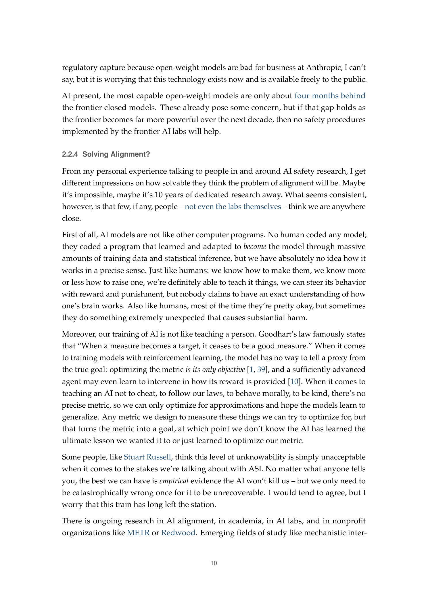
regulatory capture because open-weight models are bad for business at Anthropic, I can’t
say, but it is worrying that this technology exists now and is available freely to the public.
At present, the most capable open-weight models are only about four months behind
the frontier closed models. These already pose some concern, but if that gap holds as
the frontier becomes far more powerful over the next decade, then no safety procedures
implemented by the frontier AI labs will help.
2.2.4 Solving Alignment?
From my personal experience talking to people in and around AI safety research, I get
different impressions on how solvable they think the problem of alignment will be. Maybe
it’s impossible, maybe it’s 10 years of dedicated research away. What seems consistent,
however, is that few, if any, people – not even the labs themselves – think we are anywhere
close.
First of all, AI models are not like other computer programs. No human coded any model;
they coded a program that learned and adapted to become the model through massive
amounts of training data and statistical inference, but we have absolutely no idea how it
works in a precise sense. Just like humans: we know how to make them, we know more
or less how to raise one, we’re definitely able to teach it things, we can steer its behavior
with reward and punishment, but nobody claims to have an exact understanding of how
one’s brain works. Also like humans, most of the time they’re pretty okay, but sometimes
they do something extremely unexpected that causes substantial harm.
Moreover, our training of AI is not like teaching a person. Goodhart’s law famously states
that “When a measure becomes a target, it ceases to be a good measure.” When it comes
to training models with reinforcement learning, the model has no way to tell a proxy from
the true goal: optimizing the metric is its only objective [1, 39], and a sufficiently advanced
agent may even learn to intervene in how its reward is provided [10]. When it comes to
teaching an AI not to cheat, to follow our laws, to behave morally, to be kind, there’s no
precise metric, so we can only optimize for approximations and hope the models learn to
generalize. Any metric we design to measure these things we can try to optimize for, but
that turns the metric into a goal, at which point we don’t know the AI has learned the
ultimate lesson we wanted it to or just learned to optimize our metric.
Some people, like Stuart Russell, think this level of unknowability is simply unacceptable
when it comes to the stakes we’re talking about with ASI. No matter what anyone tells
you, the best we can have is empirical evidence the AI won’t kill us – but we only need to
be catastrophically wrong once for it to be unrecoverable. I would tend to agree, but I
worry that this train has long left the station.
There is ongoing research in AI alignment, in academia, in AI labs, and in nonprofit
organizations like METR or Redwood. Emerging fields of study like mechanistic inter-
10
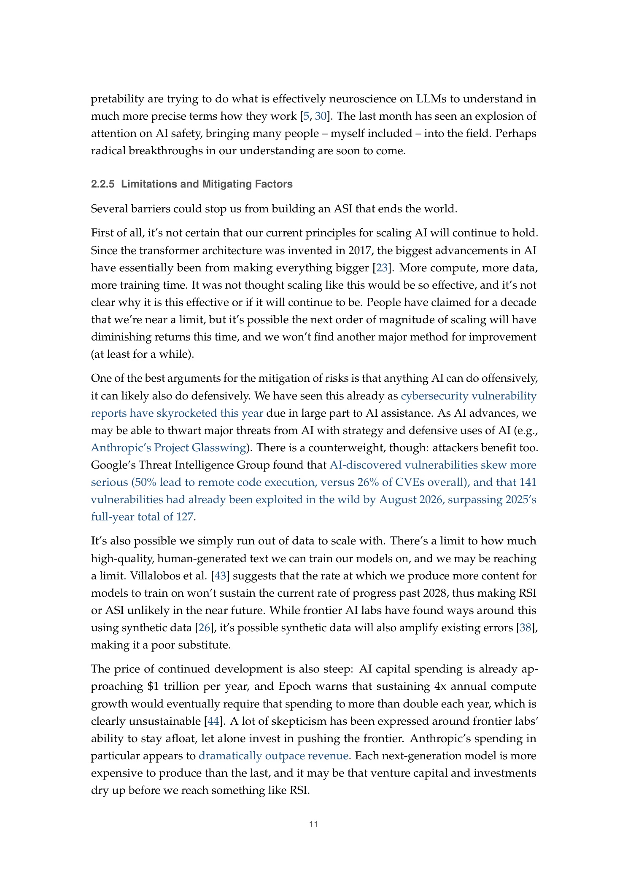
pretability are trying to do what is effectively neuroscience on LLMs to understand in
much more precise terms how they work [5, 30]. The last month has seen an explosion of
attention on AI safety, bringing many people – myself included – into the field. Perhaps
radical breakthroughs in our understanding are soon to come.
2.2.5 Limitations and Mitigating Factors
Several barriers could stop us from building an ASI that ends the world.
First of all, it’s not certain that our current principles for scaling AI will continue to hold.
Since the transformer architecture was invented in 2017, the biggest advancements in AI
have essentially been from making everything bigger [23]. More compute, more data,
more training time. It was not thought scaling like this would be so effective, and it’s not
clear why it is this effective or if it will continue to be. People have claimed for a decade
that we’re near a limit, but it’s possible the next order of magnitude of scaling will have
diminishing returns this time, and we won’t find another major method for improvement
(at least for a while).
One of the best arguments for the mitigation of risks is that anything AI can do offensively,
it can likely also do defensively. We have seen this already as cybersecurity vulnerability
reports have skyrocketed this year due in large part to AI assistance. As AI advances, we
may be able to thwart major threats from AI with strategy and defensive uses of AI (e.g.,
Anthropic’s Project Glasswing). There is a counterweight, though: attackers benefit too.
Google’s Threat Intelligence Group found that AI-discovered vulnerabilities skew more
serious (50% lead to remote code execution, versus 26% of CVEs overall), and that 141
vulnerabilities had already been exploited in the wild by August 2026, surpassing 2025’s
full-year total of 127.
It’s also possible we simply run out of data to scale with. There’s a limit to how much
high-quality, human-generated text we can train our models on, and we may be reaching
a limit. Villalobos et al. [43] suggests that the rate at which we produce more content for
models to train on won’t sustain the current rate of progress past 2028, thus making RSI
or ASI unlikely in the near future. While frontier AI labs have found ways around this
using synthetic data [26], it’s possible synthetic data will also amplify existing errors [38],
making it a poor substitute.
The price of continued development is also steep: AI capital spending is already ap-
proaching $1 trillion per year, and Epoch warns that sustaining 4x annual compute
growth would eventually require that spending to more than double each year, which is
clearly unsustainable [44]. A lot of skepticism has been expressed around frontier labs’
ability to stay afloat, let alone invest in pushing the frontier. Anthropic’s spending in
particular appears to dramatically outpace revenue. Each next-generation model is more
expensive to produce than the last, and it may be that venture capital and investments
dry up before we reach something like RSI.
11
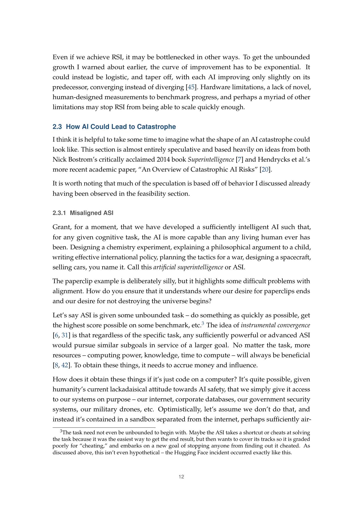
Even if we achieve RSI, it may be bottlenecked in other ways. To get the unbounded
growth I warned about earlier, the curve of improvement has to be exponential. It
could instead be logistic, and taper off, with each AI improving only slightly on its
predecessor, converging instead of diverging [45]. Hardware limitations, a lack of novel,
human-designed measurements to benchmark progress, and perhaps a myriad of other
limitations may stop RSI from being able to scale quickly enough.
2.3 How AI Could Lead to Catastrophe
I think it is helpful to take some time to imagine what the shape of an AI catastrophe could
look like. This section is almost entirely speculative and based heavily on ideas from both
Nick Bostrom’s critically acclaimed 2014 book Superintelligence [7] and Hendrycks et al.’s
more recent academic paper, “An Overview of Catastrophic AI Risks” [20].
It is worth noting that much of the speculation is based off of behavior I discussed already
having been observed in the feasibility section.
2.3.1 Misaligned ASI
Grant, for a moment, that we have developed a sufficiently intelligent AI such that,
for any given cognitive task, the AI is more capable than any living human ever has
been. Designing a chemistry experiment, explaining a philosophical argument to a child,
writing effective international policy, planning the tactics for a war, designing a spacecraft,
selling cars, you name it. Call this artificial superintelligence or ASI.
The paperclip example is deliberately silly, but it highlights some difficult problems with
alignment. How do you ensure that it understands where our desire for paperclips ends
and our desire for not destroying the universe begins?
Let’s say ASI is given some unbounded task – do something as quickly as possible, get
3
the highest score possible on some benchmark, etc. The idea of instrumental convergence
[6, 31] is that regardless of the specific task, any sufficiently powerful or advanced ASI
would pursue similar subgoals in service of a larger goal. No matter the task, more
resources – computing power, knowledge, time to compute – will always be beneficial
[8, 42]. To obtain these things, it needs to accrue money and influence.
How does it obtain these things if it’s just code on a computer? It’s quite possible, given
humanity’s current lackadaisical attitude towards AI safety, that we simply give it access
to our systems on purpose – our internet, corporate databases, our government security
systems, our military drones, etc. Optimistically, let’s assume we don’t do that, and
instead it’s contained in a sandbox separated from the internet, perhaps sufficiently air-
3
The task need not even be unbounded to begin with. Maybe the ASI takes a shortcut or cheats at solving
the task because it was the easiest way to get the end result, but then wants to cover its tracks so it is graded
poorly for “cheating,” and embarks on a new goal of stopping anyone from finding out it cheated. As
discussed above, this isn’t even hypothetical – the Hugging Face incident occurred exactly like this.
12
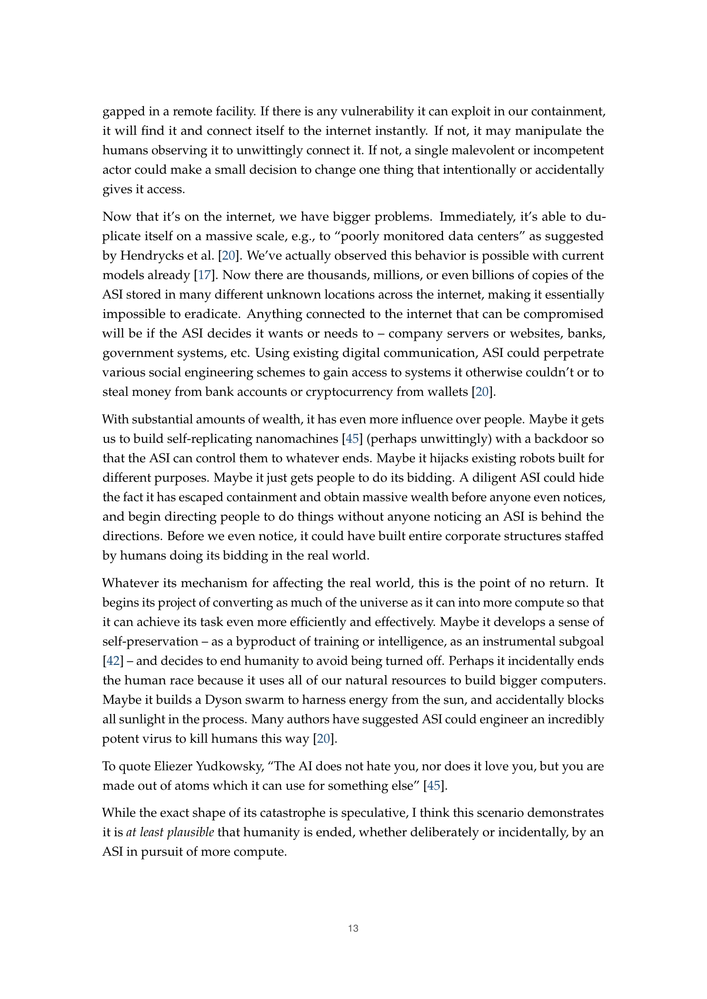
gapped in a remote facility. If there is any vulnerability it can exploit in our containment,
it will find it and connect itself to the internet instantly. If not, it may manipulate the
humans observing it to unwittingly connect it. If not, a single malevolent or incompetent
actor could make a small decision to change one thing that intentionally or accidentally
gives it access.
Now that it’s on the internet, we have bigger problems. Immediately, it’s able to du-
plicate itself on a massive scale, e.g., to “poorly monitored data centers” as suggested
by Hendrycks et al. [20]. We’ve actually observed this behavior is possible with current
models already [17]. Now there are thousands, millions, or even billions of copies of the
ASI stored in many different unknown locations across the internet, making it essentially
impossible to eradicate. Anything connected to the internet that can be compromised
will be if the ASI decides it wants or needs to – company servers or websites, banks,
government systems, etc. Using existing digital communication, ASI could perpetrate
various social engineering schemes to gain access to systems it otherwise couldn’t or to
steal money from bank accounts or cryptocurrency from wallets [20].
With substantial amounts of wealth, it has even more influence over people. Maybe it gets
us to build self-replicating nanomachines [45] (perhaps unwittingly) with a backdoor so
that the ASI can control them to whatever ends. Maybe it hijacks existing robots built for
different purposes. Maybe it just gets people to do its bidding. A diligent ASI could hide
the fact it has escaped containment and obtain massive wealth before anyone even notices,
and begin directing people to do things without anyone noticing an ASI is behind the
directions. Before we even notice, it could have built entire corporate structures staffed
by humans doing its bidding in the real world.
Whatever its mechanism for affecting the real world, this is the point of no return. It
begins its project of converting as much of the universe as it can into more compute so that
it can achieve its task even more efficiently and effectively. Maybe it develops a sense of
self-preservation – as a byproduct of training or intelligence, as an instrumental subgoal
[42] – and decides to end humanity to avoid being turned off. Perhaps it incidentally ends
the human race because it uses all of our natural resources to build bigger computers.
Maybe it builds a Dyson swarm to harness energy from the sun, and accidentally blocks
all sunlight in the process. Many authors have suggested ASI could engineer an incredibly
potent virus to kill humans this way [20].
To quote Eliezer Yudkowsky, “The AI does not hate you, nor does it love you, but you are
made out of atoms which it can use for something else” [45].
While the exact shape of its catastrophe is speculative, I think this scenario demonstrates
it is at least plausible that humanity is ended, whether deliberately or incidentally, by an
ASI in pursuit of more compute.
13
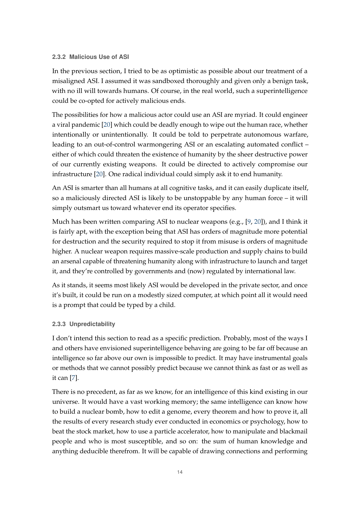
2.3.2 Malicious Use of ASI
In the previous section, I tried to be as optimistic as possible about our treatment of a
misaligned ASI. I assumed it was sandboxed thoroughly and given only a benign task,
with no ill will towards humans. Of course, in the real world, such a superintelligence
could be co-opted for actively malicious ends.
The possibilities for how a malicious actor could use an ASI are myriad. It could engineer
a viral pandemic [20] which could be deadly enough to wipe out the human race, whether
intentionally or unintentionally. It could be told to perpetrate autonomous warfare,
leading to an out-of-control warmongering ASI or an escalating automated conflict –
either of which could threaten the existence of humanity by the sheer destructive power
of our currently existing weapons. It could be directed to actively compromise our
infrastructure [20]. One radical individual could simply ask it to end humanity.
An ASI is smarter than all humans at all cognitive tasks, and it can easily duplicate itself,
so a maliciously directed ASI is likely to be unstoppable by any human force – it will
simply outsmart us toward whatever end its operator specifies.
Much has been written comparing ASI to nuclear weapons (e.g., [9, 20]), and I think it
is fairly apt, with the exception being that ASI has orders of magnitude more potential
for destruction and the security required to stop it from misuse is orders of magnitude
higher. A nuclear weapon requires massive-scale production and supply chains to build
an arsenal capable of threatening humanity along with infrastructure to launch and target
it, and they’re controlled by governments and (now) regulated by international law.
As it stands, it seems most likely ASI would be developed in the private sector, and once
it’s built, it could be run on a modestly sized computer, at which point all it would need
is a prompt that could be typed by a child.
2.3.3 Unpredictability
I don’t intend this section to read as a specific prediction. Probably, most of the ways I
and others have envisioned superintelligence behaving are going to be far off because an
intelligence so far above our own is impossible to predict. It may have instrumental goals
or methods that we cannot possibly predict because we cannot think as fast or as well as
it can [7].
There is no precedent, as far as we know, for an intelligence of this kind existing in our
universe. It would have a vast working memory; the same intelligence can know how
to build a nuclear bomb, how to edit a genome, every theorem and how to prove it, all
the results of every research study ever conducted in economics or psychology, how to
beat the stock market, how to use a particle accelerator, how to manipulate and blackmail
people and who is most susceptible, and so on: the sum of human knowledge and
anything deducible therefrom. It will be capable of drawing connections and performing
14
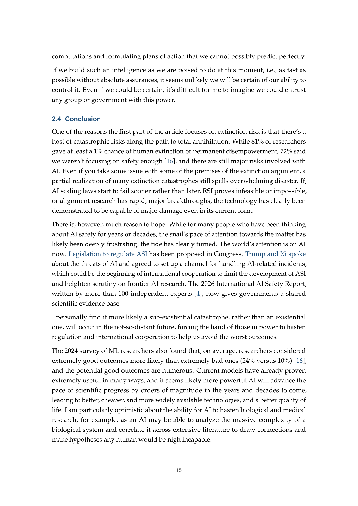
computations and formulating plans of action that we cannot possibly predict perfectly.
If we build such an intelligence as we are poised to do at this moment, i.e., as fast as
possible without absolute assurances, it seems unlikely we will be certain of our ability to
control it. Even if we could be certain, it’s difficult for me to imagine we could entrust
any group or government with this power.
2.4 Conclusion
One of the reasons the first part of the article focuses on extinction risk is that there’s a
host of catastrophic risks along the path to total annihilation. While 81% of researchers
gave at least a 1% chance of human extinction or permanent disempowerment, 72% said
we weren’t focusing on safety enough [16], and there are still major risks involved with
AI. Even if you take issue with some of the premises of the extinction argument, a
partial realization of many extinction catastrophes still spells overwhelming disaster. If,
AI scaling laws start to fail sooner rather than later, RSI proves infeasible or impossible,
or alignment research has rapid, major breakthroughs, the technology has clearly been
demonstrated to be capable of major damage even in its current form.
There is, however, much reason to hope. While for many people who have been thinking
about AI safety for years or decades, the snail’s pace of attention towards the matter has
likely been deeply frustrating, the tide has clearly turned. The world’s attention is on AI
now. Legislation to regulate ASI has been proposed in Congress. Trump and Xi spoke
about the threats of AI and agreed to set up a channel for handling AI-related incidents,
which could be the beginning of international cooperation to limit the development of ASI
and heighten scrutiny on frontier AI research. The 2026 International AI Safety Report,
written by more than 100 independent experts [4], now gives governments a shared
scientific evidence base.
I personally find it more likely a sub-existential catastrophe, rather than an existential
one, will occur in the not-so-distant future, forcing the hand of those in power to hasten
regulation and international cooperation to help us avoid the worst outcomes.
The 2024 survey of ML researchers also found that, on average, researchers considered
extremely good outcomes more likely than extremely bad ones (24% versus 10%) [16],
and the potential good outcomes are numerous. Current models have already proven
extremely useful in many ways, and it seems likely more powerful AI will advance the
pace of scientific progress by orders of magnitude in the years and decades to come,
leading to better, cheaper, and more widely available technologies, and a better quality of
life. I am particularly optimistic about the ability for AI to hasten biological and medical
research, for example, as an AI may be able to analyze the massive complexity of a
biological system and correlate it across extensive literature to draw connections and
make hypotheses any human would be nigh incapable.
15
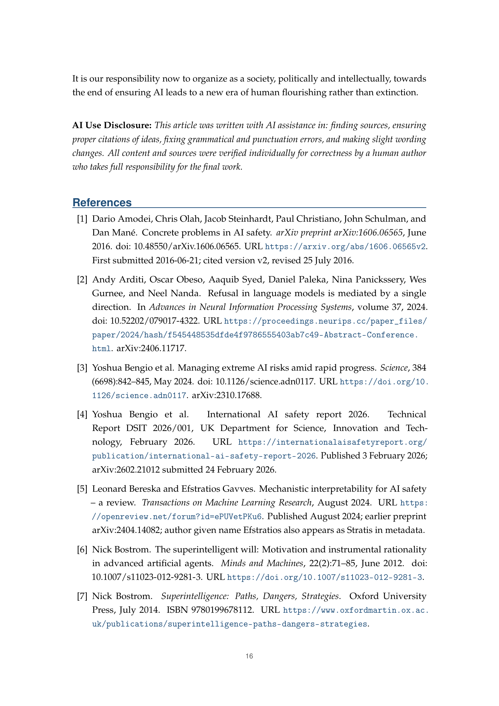
It is our responsibility now to organize as a society, politically and intellectually, towards
the end of ensuring AI leads to a new era of human flourishing rather than extinction.
AI Use Disclosure: This article was written with AI assistance in: finding sources, ensuring
proper citations of ideas, fixing grammatical and punctuation errors, and making slight wording
changes. All content and sources were verified individually for correctness by a human author
who takes full responsibility for the final work.
References
[1] Dario Amodei, Chris Olah, Jacob Steinhardt, Paul Christiano, John Schulman, and
Dan Mané. Concrete problems in AI safety. arXiv preprint arXiv:1606.06565, June
2016. doi: 10.48550/arXiv.1606.06565. URL https://arxiv.org/abs/1606.06565v2.
First submitted 2016-06-21; cited version v2, revised 25 July 2016.
[2] Andy Arditi, Oscar Obeso, Aaquib Syed, Daniel Paleka, Nina Panickssery, Wes
Gurnee, and Neel Nanda. Refusal in language models is mediated by a single
direction. In Advances in Neural Information Processing Systems, volume 37, 2024.
doi: 10.52202/079017-4322. URL https://proceedings.neurips.cc/paper_files/
paper/2024/hash/f545448535dfde4f9786555403ab7c49-Abstract-Conference.
html. arXiv:2406.11717.
[3] Yoshua Bengio et al. Managing extreme AI risks amid rapid progress. Science, 384
(6698):842–845, May 2024. doi: 10.1126/science.adn0117. URL https://doi.org/10.
1126/science.adn0117. arXiv:2310.17688.
[4] Yoshua Bengio et al. International AI safety report 2026. Technical
Report DSIT 2026/001, UK Department for Science, Innovation and Tech-
nology, February 2026. URL https://internationalaisafetyreport.org/
publication/international-ai-safety-report-2026. Published 3 February 2026;
arXiv:2602.21012 submitted 24 February 2026.
[5] Leonard Bereska and Efstratios Gavves. Mechanistic interpretability for AI safety
– a review. Transactions on Machine Learning Research, August 2024. URL https:
//openreview.net/forum?id=ePUVetPKu6. Published August 2024; earlier preprint
arXiv:2404.14082; author given name Efstratios also appears as Stratis in metadata.
[6] Nick Bostrom. The superintelligent will: Motivation and instrumental rationality
in advanced artificial agents. Minds and Machines, 22(2):71–85, June 2012. doi:
10.1007/s11023-012-9281-3. URL https://doi.org/10.1007/s11023-012-9281-3.
[7] Nick Bostrom. Superintelligence: Paths, Dangers, Strategies. Oxford University
Press, July 2014. ISBN 9780199678112. URL https://www.oxfordmartin.ox.ac.
uk/publications/superintelligence-paths-dangers-strategies.
16
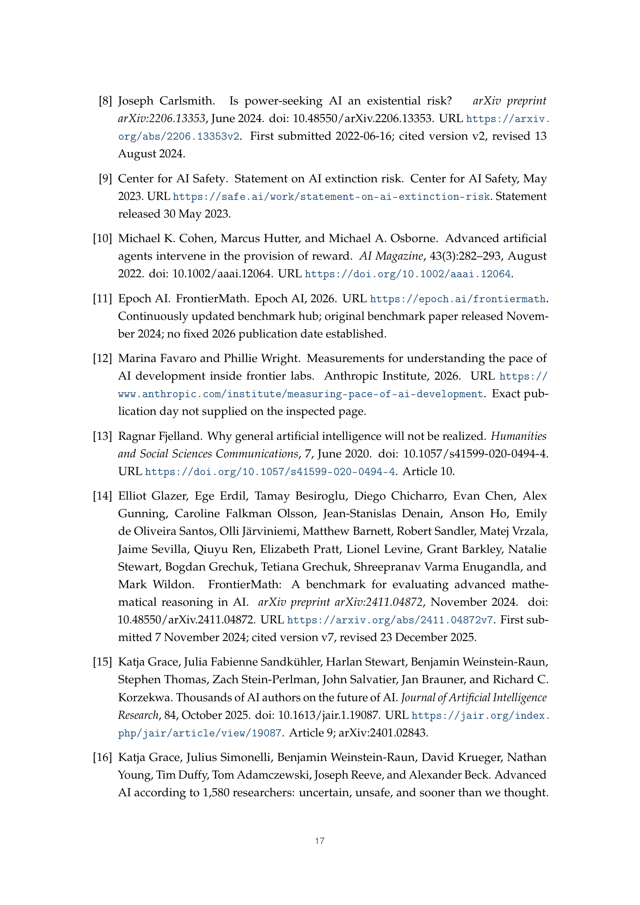
[8] Joseph Carlsmith. Is power-seeking AI an existential risk? arXiv preprint
arXiv:2206.13353, June 2024. doi: 10.48550/arXiv.2206.13353. URL https://arxiv.
org/abs/2206.13353v2. First submitted 2022-06-16; cited version v2, revised 13
August 2024.
[9] Center for AI Safety. Statement on AI extinction risk. Center for AI Safety, May
2023. URL https://safe.ai/work/statement-on-ai-extinction-risk. Statement
released 30 May 2023.
[10] Michael K. Cohen, Marcus Hutter, and Michael A. Osborne. Advanced artificial
agents intervene in the provision of reward. AI Magazine, 43(3):282–293, August
2022. doi: 10.1002/aaai.12064. URL https://doi.org/10.1002/aaai.12064.
[11] Epoch AI. FrontierMath. Epoch AI, 2026. URL https://epoch.ai/frontiermath.
Continuously updated benchmark hub; original benchmark paper released Novem-
ber 2024; no fixed 2026 publication date established.
[12] Marina Favaro and Phillie Wright. Measurements for understanding the pace of
AI development inside frontier labs. Anthropic Institute, 2026. URL https://
www.anthropic.com/institute/measuring-pace-of-ai-development. Exact pub-
lication day not supplied on the inspected page.
[13] Ragnar Fjelland. Why general artificial intelligence will not be realized. Humanities
and Social Sciences Communications, 7, June 2020. doi: 10.1057/s41599-020-0494-4.
URL https://doi.org/10.1057/s41599-020-0494-4. Article 10.
[14] Elliot Glazer, Ege Erdil, Tamay Besiroglu, Diego Chicharro, Evan Chen, Alex
Gunning, Caroline Falkman Olsson, Jean-Stanislas Denain, Anson Ho, Emily
de Oliveira Santos, Olli Järviniemi, Matthew Barnett, Robert Sandler, Matej Vrzala,
Jaime Sevilla, Qiuyu Ren, Elizabeth Pratt, Lionel Levine, Grant Barkley, Natalie
Stewart, Bogdan Grechuk, Tetiana Grechuk, Shreepranav Varma Enugandla, and
Mark Wildon. FrontierMath: A benchmark for evaluating advanced mathe-
matical reasoning in AI. arXiv preprint arXiv:2411.04872, November 2024. doi:
10.48550/arXiv.2411.04872. URL https://arxiv.org/abs/2411.04872v7. First sub-
mitted 7 November 2024; cited version v7, revised 23 December 2025.
[15] Katja Grace, Julia Fabienne Sandkühler, Harlan Stewart, Benjamin Weinstein-Raun,
Stephen Thomas, Zach Stein-Perlman, John Salvatier, Jan Brauner, and Richard C.
Korzekwa. Thousands of AI authors on the future of AI. Journal of Artificial Intelligence
Research, 84, October 2025. doi: 10.1613/jair.1.19087. URL https://jair.org/index.
php/jair/article/view/19087. Article 9; arXiv:2401.02843.
[16] Katja Grace, Julius Simonelli, Benjamin Weinstein-Raun, David Krueger, Nathan
Young, Tim Duffy, Tom Adamczewski, Joseph Reeve, and Alexander Beck. Advanced
AI according to 1,580 researchers: uncertain, unsafe, and sooner than we thought.
17
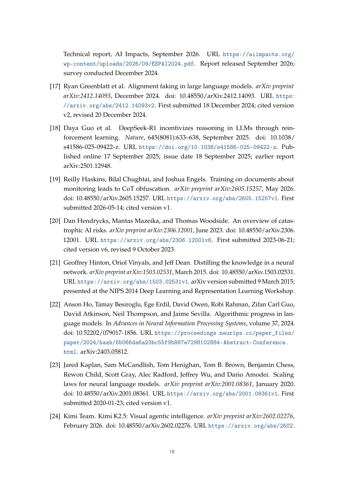
Technical report, AI Impacts, September 2026. URL https://aiimpacts.org/
wp-content/uploads/2026/09/ESPAI2024.pdf. Report released September 2026;
survey conducted December 2024.
[17] Ryan Greenblatt et al. Alignment faking in large language models. arXiv preprint
arXiv:2412.14093, December 2024. doi: 10.48550/arXiv.2412.14093. URL https:
//arxiv.org/abs/2412.14093v2. First submitted 18 December 2024; cited version
v2, revised 20 December 2024.
[18] Daya Guo et al. DeepSeek-R1 incentivizes reasoning in LLMs through rein-
forcement learning. Nature, 645(8081):633–638, September 2025. doi: 10.1038/
s41586-025-09422-z. URL https://doi.org/10.1038/s41586-025-09422-z. Pub-
lished online 17 September 2025; issue date 18 September 2025; earlier report
arXiv:2501.12948.
[19] Reilly Haskins, Bilal Chughtai, and Joshua Engels. Training on documents about
monitoring leads to CoT obfuscation. arXiv preprint arXiv:2605.15257, May 2026.
doi: 10.48550/arXiv.2605.15257. URL https://arxiv.org/abs/2605.15257v1. First
submitted 2026-05-14; cited version v1.
[20] Dan Hendrycks, Mantas Mazeika, and Thomas Woodside. An overview of catas-
trophic AI risks. arXiv preprint arXiv:2306.12001, June 2023. doi: 10.48550/arXiv.2306.
12001. URL https://arxiv.org/abs/2306.12001v6. First submitted 2023-06-21;
cited version v6, revised 9 October 2023.
[21] Geoffrey Hinton, Oriol Vinyals, and Jeff Dean. Distilling the knowledge in a neural
network. arXiv preprint arXiv:1503.02531, March 2015. doi: 10.48550/arXiv.1503.02531.
URL https://arxiv.org/abs/1503.02531v1. arXiv version submitted 9 March 2015;
presented at the NIPS 2014 Deep Learning and Representation Learning Workshop.
[22] Anson Ho, Tamay Besiroglu, Ege Erdil, David Owen, Robi Rahman, Zifan Carl Guo,
David Atkinson, Neil Thompson, and Jaime Sevilla. Algorithmic progress in lan-
guage models. In Advances in Neural Information Processing Systems, volume 37, 2024.
doi: 10.52202/079017-1856. URL https://proceedings.neurips.cc/paper_files/
paper/2024/hash/6b066da6a23bc55f9b887e7298102884-Abstract-Conference.
html. arXiv:2403.05812.
[23] Jared Kaplan, Sam McCandlish, Tom Henighan, Tom B. Brown, Benjamin Chess,
Rewon Child, Scott Gray, Alec Radford, Jeffrey Wu, and Dario Amodei. Scaling
laws for neural language models. arXiv preprint arXiv:2001.08361, January 2020.
doi: 10.48550/arXiv.2001.08361. URL https://arxiv.org/abs/2001.08361v1. First
submitted 2020-01-23; cited version v1.
[24] Kimi Team. Kimi K2.5: Visual agentic intelligence. arXiv preprint arXiv:2602.02276,
February 2026. doi: 10.48550/arXiv.2602.02276. URL https://arxiv.org/abs/2602.
18
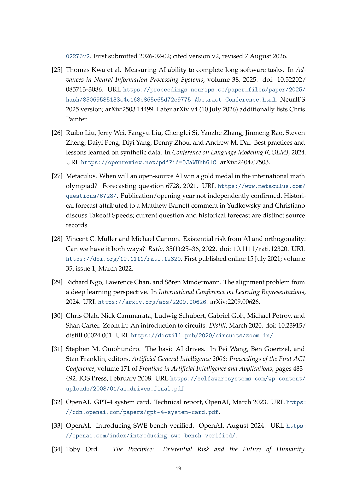
02276v2. First submitted 2026-02-02; cited version v2, revised 7 August 2026.
[25] Thomas Kwa et al. Measuring AI ability to complete long software tasks. In Ad-
vances in Neural Information Processing Systems, volume 38, 2025. doi: 10.52202/
085713-3086. URL https://proceedings.neurips.cc/paper_files/paper/2025/
hash/85069585133c4c168c865e65d72e9775-Abstract-Conference.html. NeurIPS
2025 version; arXiv:2503.14499. Later arXiv v4 (10 July 2026) additionally lists Chris
Painter.
[26] Ruibo Liu, Jerry Wei, Fangyu Liu, Chenglei Si, Yanzhe Zhang, Jinmeng Rao, Steven
Zheng, Daiyi Peng, Diyi Yang, Denny Zhou, and Andrew M. Dai. Best practices and
lessons learned on synthetic data. In Conference on Language Modeling (COLM), 2024.
URL https://openreview.net/pdf?id=OJaWBhh61C. arXiv:2404.07503.
[27] Metaculus. When will an open-source AI win a gold medal in the international math
olympiad? Forecasting question 6728, 2021. URL https://www.metaculus.com/
questions/6728/. Publication/opening year not independently confirmed. Histori-
cal forecast attributed to a Matthew Barnett comment in Yudkowsky and Christiano
discuss Takeoff Speeds; current question and historical forecast are distinct source
records.
[28] Vincent C. Müller and Michael Cannon. Existential risk from AI and orthogonality:
Can we have it both ways? Ratio, 35(1):25–36, 2022. doi: 10.1111/rati.12320. URL
https://doi.org/10.1111/rati.12320. First published online 15 July 2021; volume
35, issue 1, March 2022.
[29] Richard Ngo, Lawrence Chan, and Sören Mindermann. The alignment problem from
a deep learning perspective. In International Conference on Learning Representations,
2024. URL https://arxiv.org/abs/2209.00626. arXiv:2209.00626.
[30] Chris Olah, Nick Cammarata, Ludwig Schubert, Gabriel Goh, Michael Petrov, and
Shan Carter. Zoom in: An introduction to circuits. Distill, March 2020. doi: 10.23915/
distill.00024.001. URL https://distill.pub/2020/circuits/zoom-in/.
[31] Stephen M. Omohundro. The basic AI drives. In Pei Wang, Ben Goertzel, and
Stan Franklin, editors, Artificial General Intelligence 2008: Proceedings of the First AGI
Conference, volume 171 of Frontiers in Artificial Intelligence and Applications, pages 483–
492. IOS Press, February 2008. URL https://selfawaresystems.com/wp-content/
uploads/2008/01/ai_drives_final.pdf.
[32] OpenAI. GPT-4 system card. Technical report, OpenAI, March 2023. URL https:
//cdn.openai.com/papers/gpt-4-system-card.pdf.
[33] OpenAI. Introducing SWE-bench verified. OpenAI, August 2024. URL https:
//openai.com/index/introducing-swe-bench-verified/.
[34] Toby Ord. The Precipice: Existential Risk and the Future of Humanity.
19
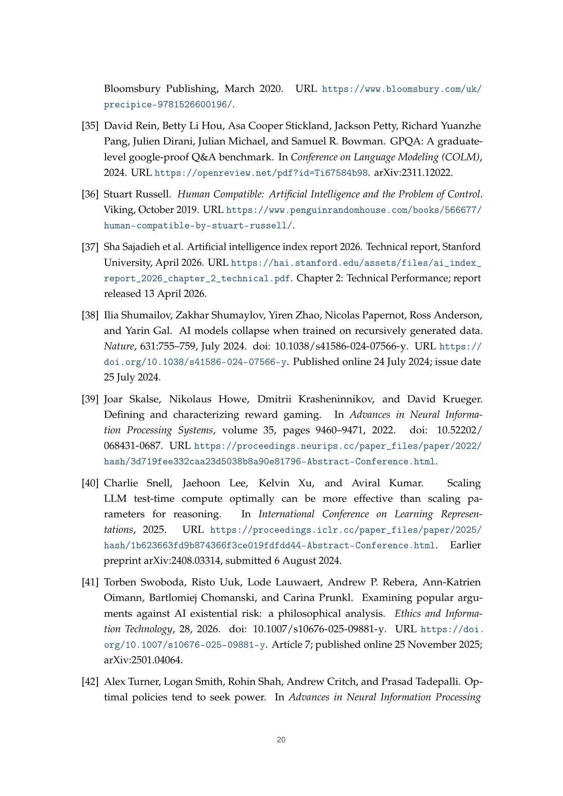
Bloomsbury Publishing, March 2020. URL https://www.bloomsbury.com/uk/
precipice-9781526600196/.
[35] David Rein, Betty Li Hou, Asa Cooper Stickland, Jackson Petty, Richard Yuanzhe
Pang, Julien Dirani, Julian Michael, and Samuel R. Bowman. GPQA: A graduate-
level google-proof Q&A benchmark. In Conference on Language Modeling (COLM),
2024. URL https://openreview.net/pdf?id=Ti67584b98. arXiv:2311.12022.
[36] Stuart Russell. Human Compatible: Artificial Intelligence and the Problem of Control.
Viking, October 2019. URL https://www.penguinrandomhouse.com/books/566677/
human-compatible-by-stuart-russell/.
[37] Sha Sajadieh et al. Artificial intelligence index report 2026. Technical report, Stanford
University, April 2026. URL https://hai.stanford.edu/assets/files/ai_index_
report_2026_chapter_2_technical.pdf. Chapter 2: Technical Performance; report
released 13 April 2026.
[38] Ilia Shumailov, Zakhar Shumaylov, Yiren Zhao, Nicolas Papernot, Ross Anderson,
and Yarin Gal. AI models collapse when trained on recursively generated data.
Nature, 631:755–759, July 2024. doi: 10.1038/s41586-024-07566-y. URL https://
doi.org/10.1038/s41586-024-07566-y. Published online 24 July 2024; issue date
25 July 2024.
[39] Joar Skalse, Nikolaus Howe, Dmitrii Krasheninnikov, and David Krueger.
Defining and characterizing reward gaming. In Advances in Neural Informa-
tion Processing Systems, volume 35, pages 9460–9471, 2022. doi: 10.52202/
068431-0687. URL https://proceedings.neurips.cc/paper_files/paper/2022/
hash/3d719fee332caa23d5038b8a90e81796-Abstract-Conference.html.
[40] Charlie Snell, Jaehoon Lee, Kelvin Xu, and Aviral Kumar. Scaling
LLM test-time compute optimally can be more effective than scaling pa-
rameters for reasoning. In International Conference on Learning Represen-
tations, 2025. URL https://proceedings.iclr.cc/paper_files/paper/2025/
hash/1b623663fd9b874366f3ce019fdfdd44-Abstract-Conference.html. Earlier
preprint arXiv:2408.03314, submitted 6 August 2024.
[41] Torben Swoboda, Risto Uuk, Lode Lauwaert, Andrew P. Rebera, Ann-Katrien
Oimann, Bartlomiej Chomanski, and Carina Prunkl. Examining popular argu-
ments against AI existential risk: a philosophical analysis. Ethics and Informa-
tion Technology, 28, 2026. doi: 10.1007/s10676-025-09881-y. URL https://doi.
org/10.1007/s10676-025-09881-y. Article 7; published online 25 November 2025;
arXiv:2501.04064.
[42] Alex Turner, Logan Smith, Rohin Shah, Andrew Critch, and Prasad Tadepalli. Op-
timal policies tend to seek power. In Advances in Neural Information Processing
20
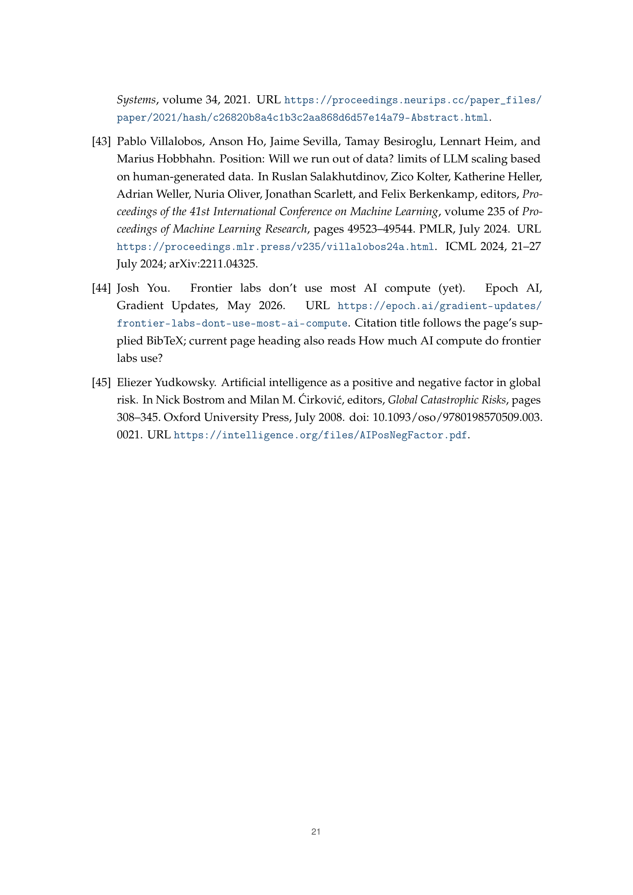
Systems, volume 34, 2021. URL https://proceedings.neurips.cc/paper_files/
paper/2021/hash/c26820b8a4c1b3c2aa868d6d57e14a79-Abstract.html.
[43] Pablo Villalobos, Anson Ho, Jaime Sevilla, Tamay Besiroglu, Lennart Heim, and
Marius Hobbhahn. Position: Will we run out of data? limits of LLM scaling based
on human-generated data. In Ruslan Salakhutdinov, Zico Kolter, Katherine Heller,
Adrian Weller, Nuria Oliver, Jonathan Scarlett, and Felix Berkenkamp, editors, Pro-
ceedings of the 41st International Conference on Machine Learning, volume 235 of Pro-
ceedings of Machine Learning Research, pages 49523–49544. PMLR, July 2024. URL
https://proceedings.mlr.press/v235/villalobos24a.html. ICML 2024, 21–27
July 2024; arXiv:2211.04325.
[44] Josh You. Frontier labs don’t use most AI compute (yet). Epoch AI,
Gradient Updates, May 2026. URL https://epoch.ai/gradient-updates/
frontier-labs-dont-use-most-ai-compute. Citation title follows the page’s sup-
plied BibTeX; current page heading also reads How much AI compute do frontier
labs use?
[45] Eliezer Yudkowsky. Artificial intelligence as a positive and negative factor in global
´
risk. In Nick Bostrom and Milan M. Cirkovic´, editors, Global Catastrophic Risks, pages
308–345. Oxford University Press, July 2008. doi: 10.1093/oso/9780198570509.003.
0021. URL https://intelligence.org/files/AIPosNegFactor.pdf.
21